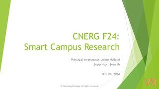

Planning
[Sprint 3 Tasks]
Sensors
Finish testing and validating sensors.
Order more HX-HE3 IR sensors.
Post notice about sensors being used.
Install sensors in 3G26-4.
Collect data from sensor and validate data.
Dashboard
Create graphs using XChart
Improve image quality.
Add interaction features
Implement graph selection
Add buttons to enable interactive connections with the graph.
4. Digital Twin Design
Progress
[Ongoing]
[Done]
Demo meeting(Nov. 8)
Presentation:

Feedback: